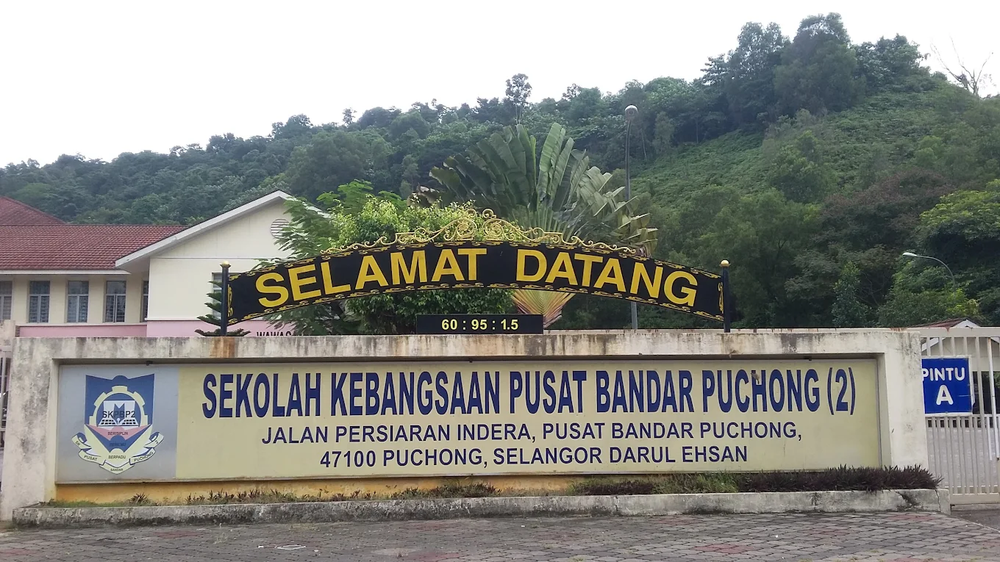

Education
| Institution | Level | Year | Field |
|---|---|---|---|
| Universiti Teknologi MARA (UiTM) Segamat | Diploma | 2022 – 2025 | Diploma in Information Management |
| SMK Pusat Bandar Puchong 1 | Secondary School | 2018 – 2022 | — |
| SK Pusat Bandar Puchong 2 | Primary School | 2012 – 2017 | — |
Universiti Teknologi MARA (UiTM) Segamat
Diploma in Information Management (2022 – 2025)
SMK Pusat Bandar Puchong 1
Secondary School (2018 – 2022)

SK Pusat Bandar Puchong 2
Primary School (2012 – 2017)
